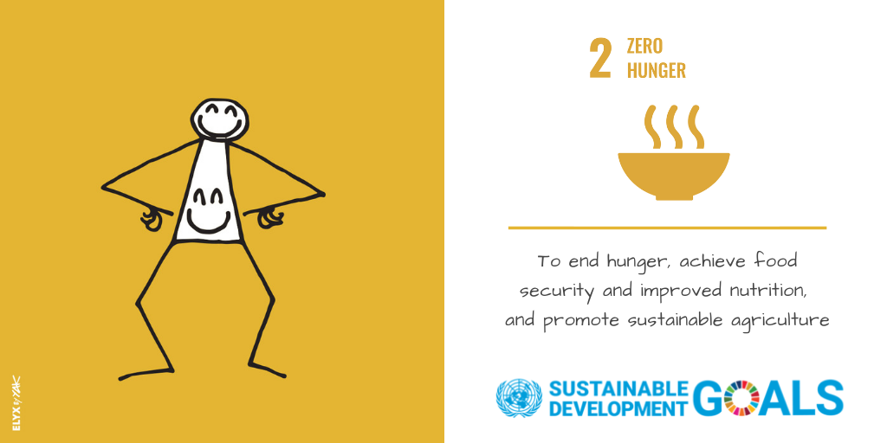
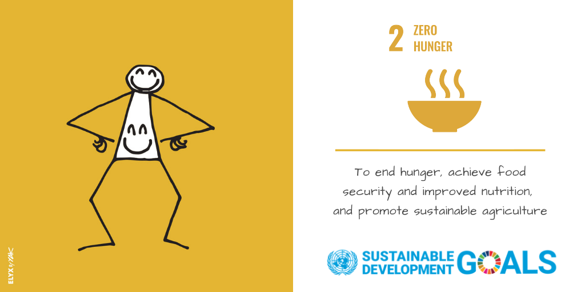

Sustainable living is a lifestyle that aims to reduce one’s environmental impact, in ways that are sustainable both for the Earth and for the person. So while pledging to never run your faucet again may be sustainable for the planet, it probably wouldn’t be sustainable for you personally (or for your friends who would be subject to your poor hygiene).
There are endless ways to live sustainably, including: reducing your use of resources, composting, relying on clean energy sources, reducing your consumption of single-use plastic, eating less animal products, shopping for clothing and other items sustainably, buying local, and more.
Sustainable living and the zero-waste movement have similar goals and many similar lifestyle patterns, but are a little bit different. Those trying to live sustainably aim to lower their overall environmental impact in a variety of ways, while the primary focus of those living zero-waste is typically to reduce the amount of trash they produce, namely single-use plastic.
For example, someone whose primary goal is to live zero-waste and produce zero trash may be comfortable eating meat that was purchased without any plastic. But someone aiming to live a well-rounded, sustainable lifestyle may consider the bigger picture (aka the massive environmental impact and ethical concerns of animal agriculture) and opt for a plant-based meal instead, even if it is packaged in plastic.
There are numerous ways to start living more sustainably — and a sustainable lifestyle looks different for everyone. Areas where you can reduce your impact include:
| Eating a plant-based diet | Composting | Reducing Single-Use Plastic |
|---|---|---|
| Animal products like meat, dairy, and eggs are the highest-impact foods on Earth. To lower your diet’s footprint, consider transitioning to a vegan diet, or at least eating more vegan meals. Along with this, it’s important to focus on wasting less food. | Instead of sending food scraps (that includes things like vegetable peels, avocado pits, and spoiled leftovers) to landfill, start composting. Composting is the process of returning anything that comes from nature to the earth, and letting it biodegrade into soil. Setting up a compost bin is super easy if you have a backyard, but it’s also possible if you live in an apartment or in a city with no yard. | Instead of sending food scraps (that includes things like vegetable peels, avocado pits, and spoiled leftovers) to landfill, start composting. Composting is the process of returning anything that comes from nature to the earth, and letting it biodegrade into soil. Setting up a compost bin is super easy if you have a backyard, but it’s also possible if you live in an apartment or in a city with no yard. |
| Transportation | Shopping |
|---|---|
| If you drive a gas-powered car every day, consider alternatives with lower emissions if they are available to you. For example, try walking, riding a bike, taking public transportation, carpooling, or investing in an electric or hybrid car when you need a new one. Additionally, many environmentalists have given up flying in airplanes (such as Greta Thunberg) due to the high environmental footprint, so consider traveling by train instead of by air when possible. | The most sustainable form of shopping is not to shop at all — and the second most sustainable form (and more realistic form) of shopping is shopping secondhand. Before buying anything new, check out your local thrift store, websites and apps like Poshmark, Craigslist, or eBay, or your local Buy Nothing group on Facebook. When it comes to items that you can’t buy secondhand, seek out companies that make products from natural or recycled materials while following sustainable business practices. |
With climate change becoming a more serious problem every day, it’s now more important than ever for people to do their part to reduce their environmental impact. Demanding lawmakers and corporations institute laws or policies to help with that is extremely important, but lowering your personal impact can make a huge difference as well.
The average American produces 4.4 pounds of trash per day, according to the EPA — that comes out to more than 1,600 pounds per year. So by transitioning to a zero-waste lifestyle, you could literally save thousands of pounds of trash from going to landfills, where it would emit harmful greenhouse gases.
By eating a vegan or plant-based diet, every year, you can save: 401,500 gallons of water, 14,600 pounds of grain; 10,950 square feet of forest, 7,300 pounds of CO2, and 365 animal lives, according to the Vegan Calculator.
While it may seem like small changes such as going zero-waste or vegan won’t really make a difference, looking at those statistics make it clear that sustainability lifestyle changes can be powerful.
Growing some of your own food. Start a vegetable or herb garden, and plant a fruit tree or even two. This will save tonnes of transport greenhouse gases because the food will be right outside your door.
Did you know that preserving food by pickling, drying or bottling is better than freezing in a refrigerator.
Why? Because it uses less energy than the refrigerator.
Gases such as carbon dioxide and methane are released into the atmosphere from waste disposal sites. This adds to the greenhouse effect and global warming. Dangerous materials also leaking from rubbish dumps and pollute waterways and soil from rubbish dumps.
Insulate houses to reduce the amount of energy needed to heat and cool the house. Trees planted around the house will shade it during hot weather. Some people are covering roofs with living plants to stop the house warming or cooling too quickly.
Use public transport whenever you can to reduce the amount of gases from petrol powered cars. Ride your bike!

The Sustainable Development Goals are the blueprint to achieve a better and more sustainable future for all. They address the global challenges we face, including poverty, inequality, climate change, environmental degradation, peace and justice. Learn more and take action.
 
